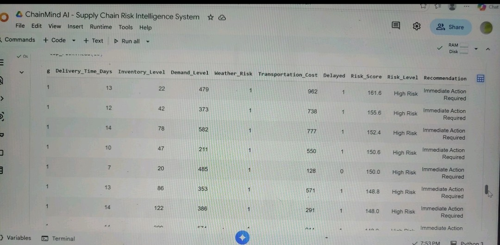
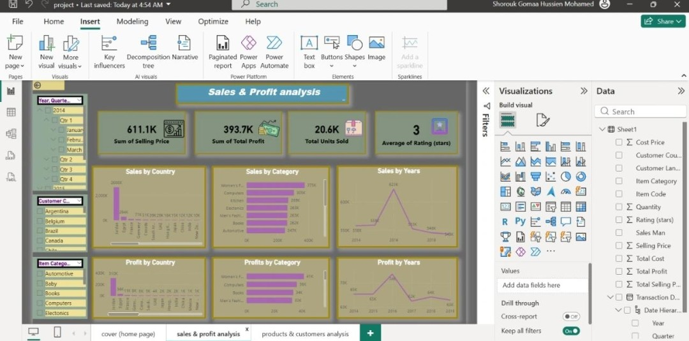
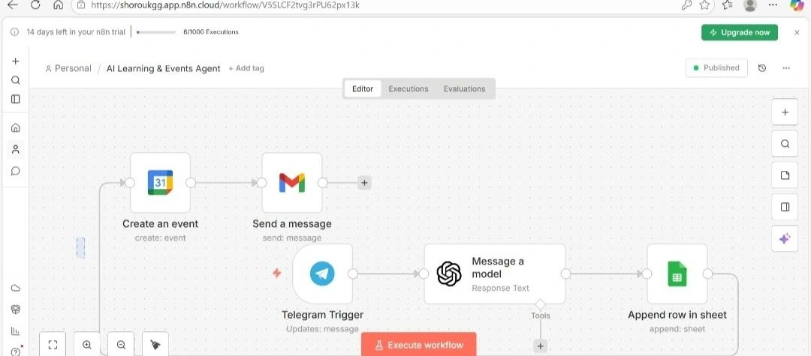
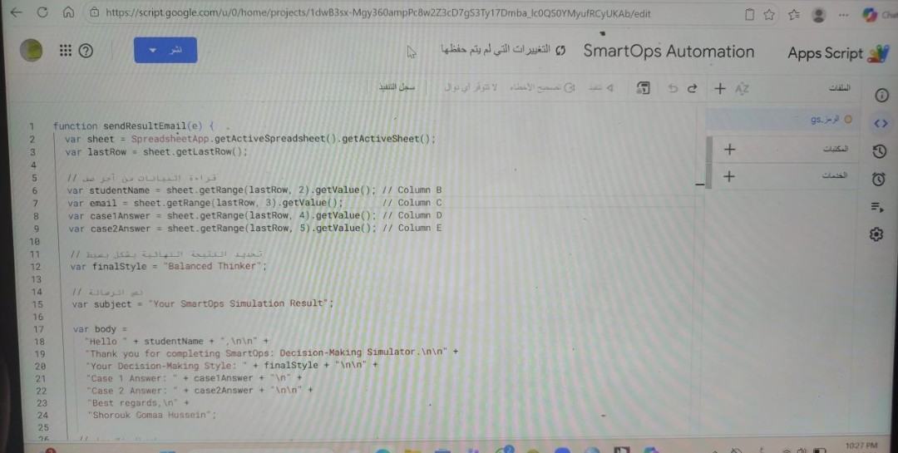

Selected work
Each project follows the same shape: the problem, what I built, and what came of it.

Machine Learning · Supply ChainProblem: Supply chains rarely turn signals — supplier delays, weather, demand swings — into a clear risk picture before damage is done.
What I did: Built a Random Forest model on shipment, inventory, and demand data to predict delay risk, score it (Low/Medium/High), and auto-generate recommendations.
What came of it: ~76% prediction accuracy on ~1,000 simulated shipments, plus an executive summary identifying the key operational risk drivers.

Business Intelligence · Power BIProblem: Raw sales and customer data doesn't answer "where's the profit coming from" on its own.
What I did: Built an interactive Power BI dashboard with KPIs, trend analysis, and drill-downs by category, country, and product.
What came of it: A dynamic, user-friendly report enabling real data-driven decisions instead of static exports. Associated with the National Telecommunication Institute (NTI).

Automation · No-CodeProblem: Event details shared in a post or link don't turn themselves into reminders.
What I did: Built a no-code workflow that extracts event details (name, date, time, link) from a Telegram input, stores them in Google Sheets, and sends reminders via Email and Google Calendar.
What came of it: A working, end-to-end reminder system with no manual step between "event announced" and "reminder sent." Associated with iCareer.

Simulation · EducationProblem: Theoretical Operations Management learning rarely gets tested against a realistic, scenario-based decision.
What I did: Designed multi-path decision scenarios with automated evaluation logic and personalized feedback, delivered by email through a fully automated Google Apps Script workflow.
What came of it: A working simulator that bridges classroom theory and practice — and the direct precursor to the OM Lesson Architect agent on this site.